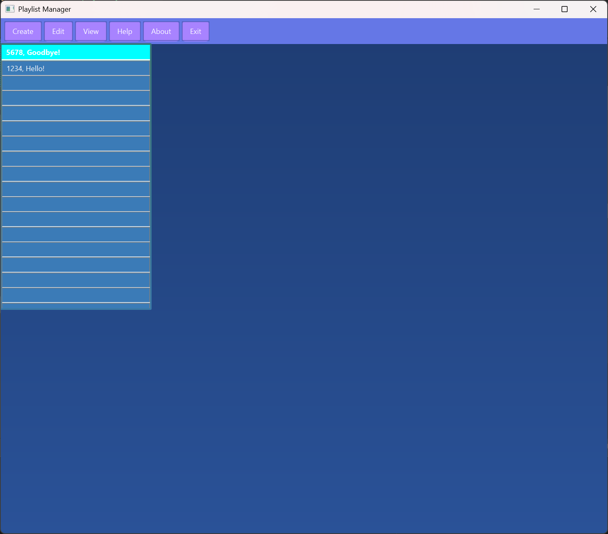
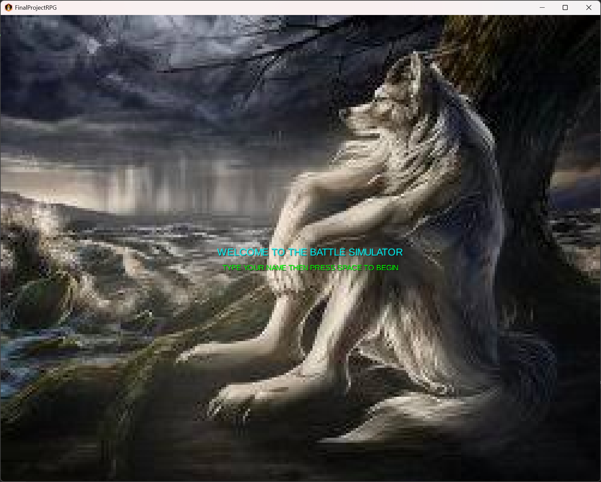
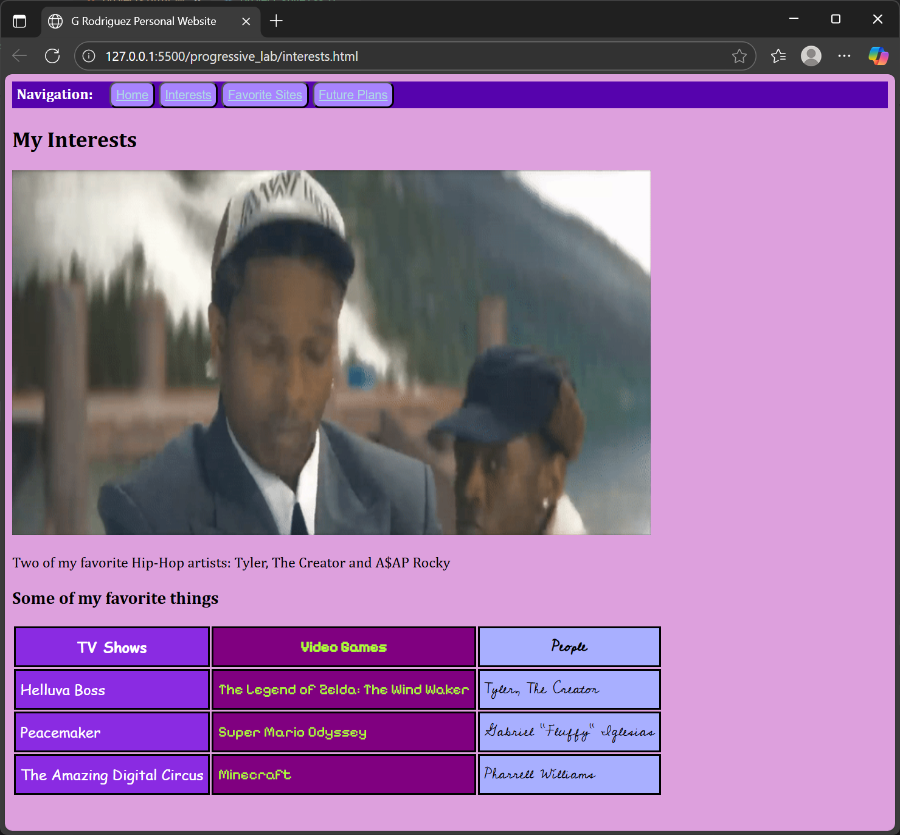

This is a project I made completely by myself over the course of 3 weeks for a project management course using JavaFX. While it is not hooked up to an API (anyone who has worked with music APIs knows how ridiculously difficult it can be to obtain access, especially the APIs for large services like Spotify), it is a full playlist manager that supports adding and removing playlists, adding and removing songs, and even exporting playlists to a PDF or HTML file, allowing for things like printing or adding to an external database. It is very barebones in terms of the presentation of the GUI but it is very user friendly and even has an about page that details all features, as well as having detailed feature explanations available on the GitHub repository through the README file.

This is a fun project I created in 3 weeks for an Object Oriented Programming course using the LibGDX Java library. It's not very pretty or balanced and incorporates a lot of humor but it far exceeded the expectations of the assignment and impressed my professor. I was one of only two students in my class who created a project with a GUI. It far exceeded the scope of what was required for the project and it was definitely a massive learning experience (mostly in that I never want to work with anything involving Gradle ever again). However, I am very proud of this project in terms of how quickly it was created considering I had to learn a whole library in 3 weeks and navigate issues with Gradle and still managed to finish the project with fully functional battles, imported music, and working stats.

This is a page I developed as part of a project for my introductory Web Dev course. It required an animated GIF reflecting one of our interests and a simple table of our top three of our favorites from three different categories of interests. I decided to add some flavor to it by making each column of interests have a different font and a different color somewhat correlated to the interest. While it's not the prettiest website and looks straight out of a teenager's blog in 2001, I am really proud of this page because of how naturally it came to me and showed me how to do different things like importing fonts from the Google Fonts page (something which I did on this website as well!) and incorporate GIFs into my webpages. I went into the course knowing a lot of the material but my own natural curiosity allowed me to learn some new things about Web Development and Design that I will continue to incorporate in the future.